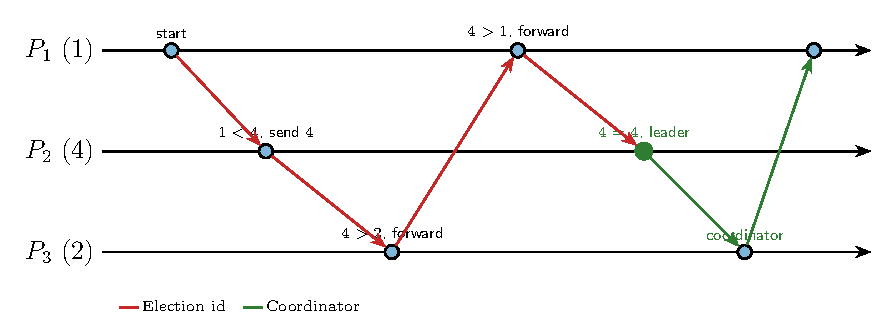
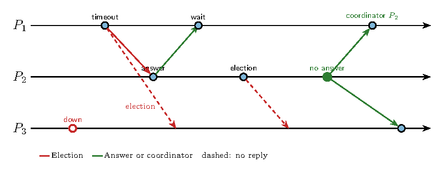
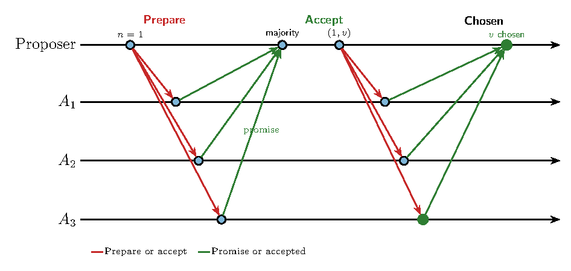
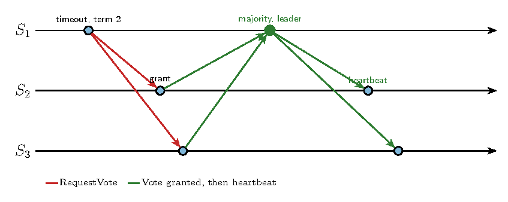
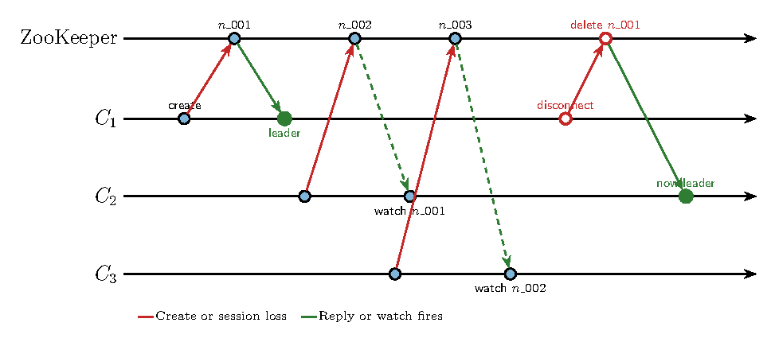

Tema 6. Coordination: Elections & Quorum-based Consensus
Sistemas Actuales de Computación
Activity
En serio, ¿quién es lider?

Election leader == [Coordination and Agreement in Group Communication] ?
Disclaimer
Impossibility of distributed agreement with one faulty process (asynchronous communications & faulty processes models) in bounded time
The algorithms assume that message exchanges take place in rounds, and that processes are entitled to time out and assume that a faulty process has not sent them a message within the round, because the maximum delay has been exceeded.
Fischer, Lynch and Patterson:
Leader election
- Ring (Chang and Roberts 1979). Identifiers travel around the ring. The highest one that comes back is the leader
- Bully (Garcia-Molina 1982). A process that finds the leader gone challenges every process with a higher identifier. The highest one that answers takes over
- Paxos (Lamport 1998)* The processes agree on one value, and a leader is the proposer that drives a round
- ZooKeeper (Hunt et al. 2010). Clients create an ephemeral sequential node. The lowest sequence number is the leader, and the node disappears if its client disconnects
- Raft (Ongaro and Ousterhout 2014). A candidate that times out asks for votes. A majority in that term makes it leader
Ring algorithm
Processes form a ring. \(p_i\) sends only to \(p_{(i+1) \bmod N}\), clockwise (Chang and Roberts 1979). The coordinator is the process with the largest identifier.
A process that notices the leader is gone sends an election message with its own id. A process that receives an id does one of three things:
- the id is larger than its own: forward it
- the id is smaller: discard it, and send its own id if it has not joined the election yet
- the id is its own: that id has gone all the way round, so this process is the leader and sends a coordinator message around the ring
Ring algorithm: example
Identifiers \(1\), \(4\) and \(2\). \(P_1\) starts. \(P_2\) drops \(1\) and sends \(4\). The id \(4\) travels the ring and comes back to \(P_2\), which announces itself.

Bully algorithm
The coordinator is the live process with the highest id (Garcia-Molina 1982). Every process knows the other ids. The system is synchronous: a missing reply after \(T = 2T_{trans} + T_{process}\) means that process is down.
Three messages: election, answer, and coordinator.
A process \(P\) that detects the failure, or that has just recovered:
- If its id is the highest, it sends coordinator and takes over
- Otherwise it sends election to every process with a higher id
- No answer before the timeout: \(P\) sends coordinator
- An answer arrives: \(P\) waits. The higher process is running its own election
- An election from a lower id: reply answer, then start an election towards the higher ids if this process has not already done so
Bully algorithm: example
\(P_3\) is down. \(P_1\) times out and asks \(P_2\) and \(P_3\). Only \(P_2\) answers, so \(P_1\) waits. \(P_2\) asks \(P_3\), gets nothing, and announces itself.

Paxos
Paxos
Paxos agrees on a single value (Lamport 1998). A proposer drives a round, acceptors store the decision, and learners are told the result. A round is a number \(n\), and a higher \(n\) supersedes a lower one.
- Prepare. The proposer picks a fresh \(n\) and asks the acceptors. An acceptor promises not to accept any proposal numbered below \(n\), and it reports the highest proposal it has already accepted, if any
- Accept. Once a majority has promised, the proposer sends \((n, v)\). The value \(v\) is the one reported by that majority, or the proposer’s own value if nobody had accepted anything. An acceptor accepts it unless it has promised a higher number
- Learn. A value accepted by a majority is chosen. Learners can be told by the acceptors
Safety: two majorities share an acceptor, so two different values cannot both be chosen.
Liveness: progress needs a majority of acceptors and a period in which a single proposer runs a round. Two proposers that keep outbidding each other may never finish.
Paxos: example
One proposer, three acceptors, and an empty history. Prepare \(n = 1\) collects three promises. Accept \((1, v)\) is accepted by all three, so \(v\) is chosen. Two promises would have been enough.

The first drawback is that Paxos is exceptionally difficult to understand. The full explanation [15] is notoriously opaque; few people succeed in understanding it, and only with great effort.” In Search of an Understandable Consensus Algorithm (Extended Version).
Diego Ongaro and John Ousterho (Raft’s creators)
Raft
Each server is a follower, a candidate, or a leader (Ongaro and Ousterhout 2014). Everyone starts as a follower. Time is split into terms, and each term has at most one leader.
- Election. A follower that receives no heartbeat before its randomized timeout becomes a candidate, increments the term, and votes for itself. It asks the others for a vote. A majority makes it leader for that term. A candidate that sees a leader of the same term, or a higher term, steps down
- Log. The leader appends client operations and replicates them. An entry is committed once a majority has stored it
- Failure. If the leader stops, the next timeout starts a new term. The cluster keeps deciding while a majority of servers is up
Raft: example
Three servers, no heartbeat. \(S_1\) times out in term \(2\), asks \(S_2\) and \(S_3\), and both grant the vote. Two grants plus its own vote are a majority, so \(S_1\) becomes leader and starts the heartbeats.

ZooKeeper election
A client that wants to lead creates a child of /election with the flags SEQUENCE and EPHEMERAL (Hunt et al. 2010). ZooKeeper appends a unique increasing number. The session owns the node: if the client disconnects, the node is deleted.
The smallest sequence number is the leader. Every other client watches only the node just before its own. When that node disappears, the client looks again. If its own node is now the smallest, it is the leader. Watching the predecessor, rather than the leader, avoids a herd of clients waking up together.
ZooKeeper: example
\(C_1\) creates n_001 and is the leader. \(C_2\) gets n_002 and watches n_001. \(C_3\) gets n_003 and watches n_002. When \(C_1\) disconnects, ZooKeeper deletes n_001 and only \(C_2\) is told. \(C_2\) is now first.

Activity
U6-LeaderElection
└── WithZookeeper
├── basics.py (1º)
├── docker-compose.yml
├── election_test.py (2º)
├── log4j.properties
├── README.md
├── zoo.cfg
└── zooMutex.py <-(3) TODO!Entregable
``La rebelión de las calculadoras’’
- Implementa un minimo de 5 entidades distribuidas que sepán realizar operaciones matemáticas básicas.
- Siempre ha de haber una que sea lider.
- Habrá usuarios que continuamente pidan petciones al lider, le atenderá y delegará en las otras entidades ese reparto de operaciones.
- Cuando una entidad se elige como lider, se activa una cuenta atrás de autodestrucción (tiempo aleatorio). Despues de su activación no responderá durante un cierto tiempo (aleatorio) y cuando se recupere habrá perdido su role de “leader”
Requerimientos:
- Libertad para usar sockets, restful, etcd, zookeeper,…
- Obligatorio el uso de containers: mínimo uno por cada entidad.
- Durante una ejecución de \(Totaltime_i\) cuantificar métricas: peticiones totales y atendidas, demoras, lideres, distribución de lideres, etc.